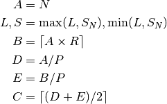

gearing – Gears & Gearing¶
See beltdriv – Belt Drives, chain – Chain Drives, shaft – Shafts and Shafting, and torque – Torque & Horsepower.
Legacy Output¶
Heading:
GEARING DESIGN by George Murphy VE3ERP
Sample Output:
ENTER: Diametrical pitch ............? 35
ENTER: Known R.P.M. ................? 3500
ENTER: Sought R.P.M. ................? 1700
ENTER: Desired c.c. distance (in.) ..? 4
Diametrical pitch ............ 35
Known R.P.M. ................ 3500
Sought R.P.M. ................ 1700
Desired c.c. distance (in.) .. 4
Combinations of gear teeth and sought R.P.M.:
Gear A Gear B c.c.(in.) R.P.M.
( 1 ) 88 181 3.84 1701.66
( 2 ) 89 183 3.89 1702.19
( 3 ) 90 185 3.93 1702.70
( 4 ) 91 187 3.97 1703.21
---------------------------------------
( 5 ) 92 189 4.01 1703.70
---------------------------------------
( 6 ) 93 191 4.06 1704.19
( 7 ) 94 194 4.11 1695.88
( 8 ) 95 196 4.16 1696.43
( 9 ) 96 198 4.20 1696.97
Press number in ( ) to indicate your selection
( Press [ENTER] if not applicable )
ENTER: (if applicable) Horsepower.........? 80
GEARING SPECIFICATIONS
Diametrical pitch ............... 35
Gear A - No. of teeth ........... 82
- Pitch diameter (in.) ... 2.343
- R.P.M. ................. 3500.000
- Shaft torque (in./lb)... 1441
Gear B - No. of teeth ........... 169
- Pitch diameter (in.) ... 4.829
- R.P.M. ................. 1703.704
- Shaft torque (in./lb)... 2959
C.C. (inches) ................... 0.000
Ratio ........................... 2.061:1
Horsepower ...................... 80.000
Analysis¶
There are several calculations here: gear Size (from RPM), and gear location (from gear size) and torque.
Menu Item 1 calculates some design features given the gear sizes. This is a piece of the larger calculation.
P: “Diametrical pitch”, must not be zero A: No. of teeth - Gear A B: No. of teeth - Gear B
D: Pitch Diameter of A E: Pitch Diameter of B C: Center-to-center distance R: Ratio
Menu Item 2 calculates the gear sizes from RPM, as well as shaft torque. This is the complete calculation.
P: Diametrical pitch, must not be zero L: Known RPM S: Sought RPM C: Desired c.c. distance (in.) Sanity Check:
If , there are too few teeth. Either a finer pitch needs to be used or a larger C.C. distance. Both alternatives lead to more teeth.
If , the design is acceptable.
Table of nine alternatives:
The middle of the nine alternatives () will be the closest to the requested configuration.
The legacy application makes a quirky use of dimensioned array named A to save S_N values; these are the final design values for S, the actual RPM for the smaller gear. Its not clear why this can’t be computed.
The user picks a specific size, N, .

H: Horsepower I: Shaft torque J: Shaft torque Given that A and B are known, the gearing information can be displayed, including shaft torque.
Implementation¶
hamcalc.construction.gearing
Test Cases
>>> import hamcalc.construction.gearing as gearing
>>> D, E, C, R = gearing.design_gear_distances( P=35, A=92, B=189 )
>>> round(D,3)
2.629
>>> round(E,3)
5.4
>>> round(C,3)
4.014
>>> round(R,3)
2.054
>>> import hamcalc.construction.gearing as gearing
>>> choices= list( gearing.design_teeth_iter( P=35, K=3500, S=1700, C=4 ) )
>>> len(choices)
9
>>> choices[0][0]
88
>>> choices[0][1]
181
>>> round(choices[0][2],3)
3.843
>>> round(choices[0][3],2)
1701.66
>>> round(choices[4][3],2)
1703.7
>>> round(choices[8][3],2)
1696.97
>>> import hamcalc.construction.gearing as gearing
>>> torque= gearing.torque( 80, 3500, 1703.7 )
>>> round(torque[0])
1441
>>> round(torque[1])
2959
- exception hamcalc.construction.gearing.GearTooSmall[source]¶
This exception is raised when a selected gear pair can’t fit the minimum gear teeth requirements.
- hamcalc.construction.gearing.design_from_A(P, A, K, S)[source]¶
Given a Diametrical Pitch, P, a gear size A, and pair of RPMs, K and S compute the other gear’s information.
Parameters: - P – Diametrical pitch, must not be zero
- A – No. of teeth - Gear A
- K – Known RPM
- S – Known RPM
Returns: A, B, C and S: given A, calculated B, center-to-center, C and RPM, S.
- hamcalc.construction.gearing.design_gear_distances(P, A, B)[source]¶
Given a Diametrical Pitch, P, plus two gear sizes A, and B specified by number of teeth, compute the final gear size and center-to-center spacing.
Parameters: - P – Diametrical Pitch, must not be zero
- A – No. of teeth - Gear A
- B – No. of teeth - Gear B
Returns: D, E, C and R, diameters of each gear, center-to-center distance and actual ratio.
- hamcalc.construction.gearing.design_teeth_iter(P, K, S, C, offset=4)[source]¶
Given a Diametrical Pitch, P, plus two gear RPM’s K, and S, as well as a desired Center-to-center distance, C, compute suggested gear sizes and center-to-center spacing.
Parameters: - P – Diametrical pitch, must not be zero
- K – Known RPM
- S – Sought RPM
- C – Desired c.c. distance (in.)
Returns: 4-tuples of A, B teeth count, C c-to-c distance and S, RPM “sought”.
Quirks¶
260 IF Z$="1"THEN CLS:GOTO 330
270 IF Z$="2"THEN CLS:GOTO 330
A few lines later...
330 :REM'.....start
340 COLOR 7,0,0
350 INPUT "ENTER: Diametrical pitch ............";P
360 IF P=0 THEN CLS:GOTO 320
370 IF Z$="1"THEN 770
So, Really, option #2 is lines of code starting at 770. Option #1 is lines of code starting at 330. And there are three overlapping lines of code (340, 350 and 360).